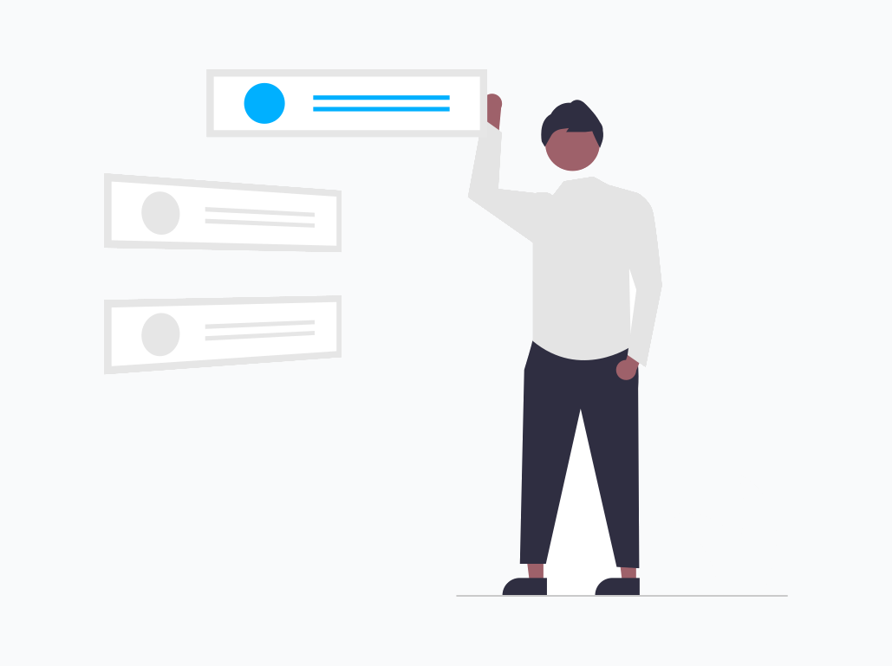
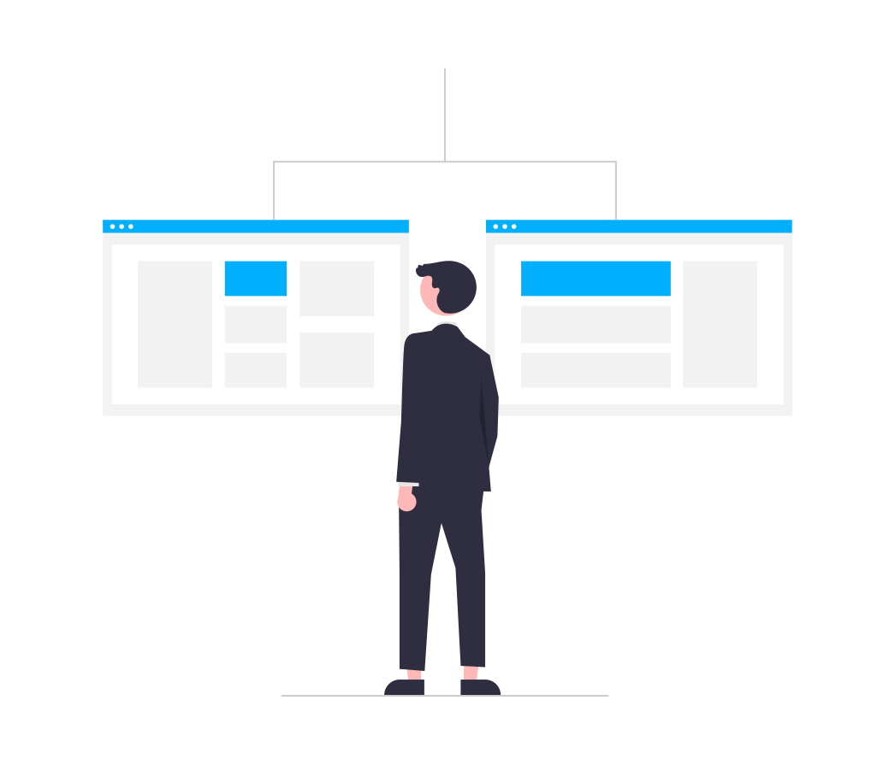
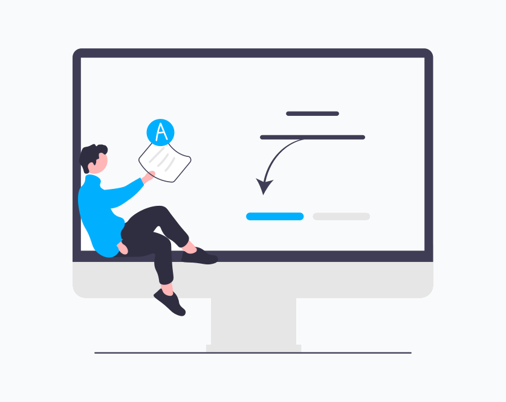

Introducción
¡Bienvenida!

¡Hola! bienvenid@ a la documentación técnica de la creación e implementación de un chatbot con IA enfocado en el seguimiento de tickets de soporte para la resolución de problemas. La función principal de la documentación de este proyecto es evitar tropiezos al momento de trabajar e implementar este tipo de tecnologías, además de brindar algunas herramientas que facilitan el trabajo de cualquier desarrollador enfocado en el área. Es importante recalcar que esta documentación no solo permitirá la creación de este chatbot en particular, sino que también puede ser utilizada para la creación de cualquier tipo chatbot que el desarrollador necesite. La información y links a todos los recursos utilizados durante el desarrollo de este proyecto estarán en esta documentación. Sin más que agregar siéntete libre de navegar por este lugar.
¿Qué es esta Pagína?
En general, esta Pagína pretende ser una herramienta útil al momento de desarrollar e implementar un sistema de chatbot en algún tipo de servicio (web,social,etc). para poder lograr eso, es necesario investigar en diferentes fuentes, cual es la forma correcta de hacerlo, o en algunos casos investigar cómo es que se solucionan estos problemas. Es por ello que en esta pagína se ha recopilado toda la información base necesaria para que cualquier desarrollador pueda implementar de manera eficaz un proyecto de este estilo. Puedes tomar este documento como una guía que será muy útil para no tropezar con los mismos errores que el creador de este.
¿Cómo se estructura la pagína?

Esta página se compone de muchas partes ya que hacer una documentación completa para un proyecto grande como este, es casi imposible de resumir u omitir algunos detalles que podrían sacarnos de un apuro en el futuro. Para ello este documento se estructuró con algunos links directos que te redirigen a páginas específicas de la documentación evitando que busques página por página o que tengas que leer todo de nuevo. Por ejemplo si en alguna parte de la lectura se te hace referencia a un repositorio de git cuyo enlace se encuentra en este documento podría hacerlo de la siguiente manera:
“Puedes consultar la información de este repositorio en la sección de Anexos o ir directamente a él dando click aqui”
De esta forma no importa en qué parte de la lectura estés, siempre y cuando existan este tipo de enlaces, ahorrarán tiempo y esfuerzo a los desarrolladores.
Panorama general y alcances esperados

En palabras más específicas lo que se pretende con este proyecto es desarrollar y diseñar un chatbot operacional cada vez más inteligente que sea capaz de entender y manejar consultas de seguimiento cada vez más complejas para dar soporte a los tickets que generan los clientes. Cualquier compañía que siga manejando únicamente el correo electrónico o el teléfono corre el riesgo de quedarse obsoleta. Muchas compañías apuestan por chatbots para usarlos con propósitos conversaciones o de información, pero es el momento de ir más allá y aprovecharse de las ventajas de la IA, construyendo un chatbot operacional basado en el lenguaje natural y aprendizaje automático, que sea capaz de entender y manejar consultas cada vez más complejas de nuestros clientes; proporcionándoles una respuesta inmediata y cómoda a su consulta. A su vez, que nos brinde datos detallados y procesables de momentos problemáticos de nuestros clientes, ofreciendo una mejor experiencia para los clientes que requieren información y/o seguimiento con sus tickets de soporte.
Trabajos previos e investigaciones que aportan al proyecto

Algunos de los trabajos e investigaciones realizadas por mi (creador de la documentación) , se pueden encontrar en mi repositorio de github pero en resumen,algunas de las investigaciones o trabajos que pueden aportar al proyecto (sin embargo no son indispensables) son :
No es necesario haber trabajado con este tipo de herramientas o saber de memoria estos temas, sin embargo es de mucha ayuda y utilidad conocer estos conceptos o al menos estar familiarizado con los mismos, ya que en ocasiones se harán referencias a ellos.
Autoevaluación
En esta sección encontrarás algunas preguntas que te permitirán saber si lo que leíste anteriormente quedó claro del todo. Si no es el caso puedes ingresar a la pregunta para saber donde se resuelve esta misma.